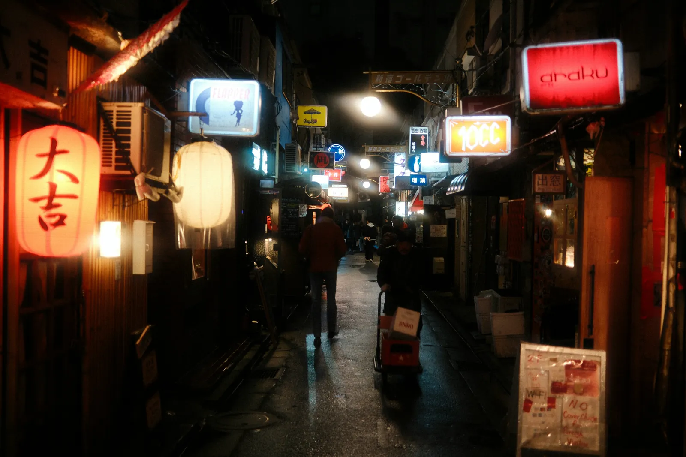
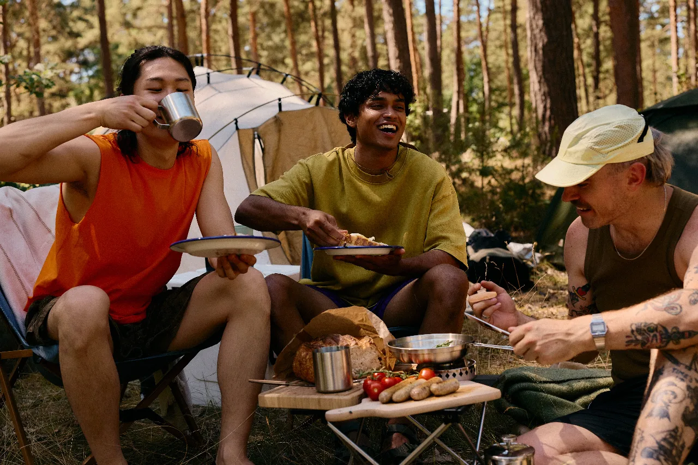
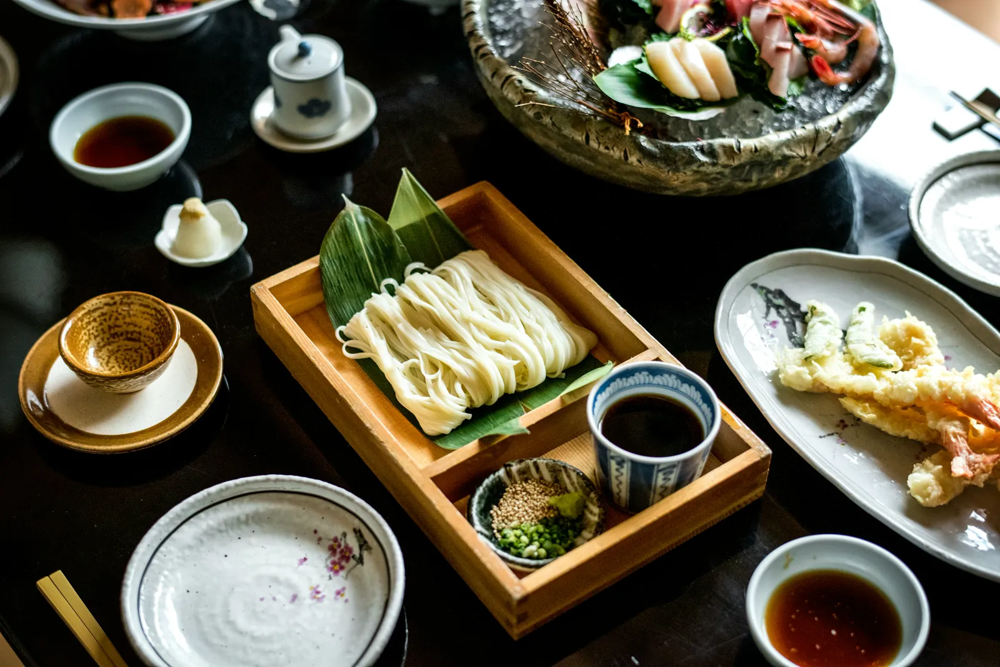
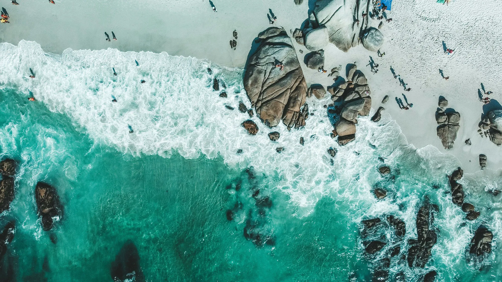

Bright Trip was selling travel courses before anyone knew what a travel course was.
I joined early, while the company was still working out what a course actually was and the whole content operation fit around one table. My title was Lead Content Producer. In practice that meant pre-production, filming, the edit, and then whatever the launch needed after that.
Tokyo was the biggest of them, and big enough to need a team. I traveled out for the production, edited a good share of the chapters, and ran the social and email side of the launch. Cape Town and camping I cut myself, start to finish. Somewhere in there I helped lead a team of editors and made the trailers and channel pieces that got people to the catalog in the first place.
Tokyo DemystifiedCourse trailer
Tokyo was bigger
than one edit bay
Tokyo is a hard city to make a course about. Almost everything a visitor needs to know is either completely obvious or completely buried, and there is not much sitting in between. We went after the buried half.
The course ran long enough that no one person was going to cut it, so this one was a team job. I traveled out for the production and then took a good share of the chapters through the edit. I also ran social and email for the launch, which is a useful thing to have done on a course you helped build, because you already know which two minutes are worth cutting a post around.



Cape Town and
camping, both
start to finish
Both of these I cut on my own. Everything a customer watches in Cape Town and Camping 101 came out of my timeline, which is a different kind of pressure than splitting a course across a team. There is nobody downstream to catch what you missed, and the pacing across the whole thing is yours to answer for.
Both trailers had the same problem to solve. Someone lands on a page for a city they have never visited or a skill they have never tried, and they decide in a few seconds whether the whole course is worth paying for.
Cape TownCourse trailer
Camping 101Course trailer

The channel did the convincing
A course is a hard first purchase from a company nobody has heard of yet. The channel was where people met Bright Trip before they ever saw a price, so the free pieces had to be worth watching on their own rather than a commercial in disguise.
I produced and edited across it. Some pieces came straight off course material, like the Tokyo train explainer. Others were built for the channel alone. That same work carried into social cutdowns, email, and the pushes we ran when a course went on sale.
Tokyo's Train System, Explained
What Really Makes a Great Bowl of Ramen
How Cape Town Was Founded
5 Must-Haves for Traveling With Kids